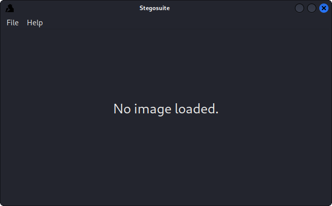
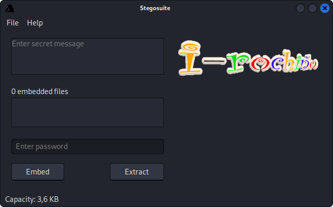
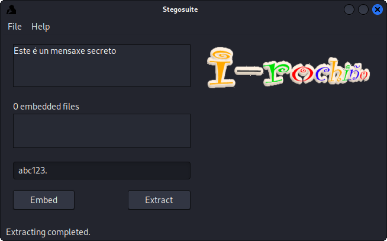

Primeiro necesitamos "stegosuite", que é o programa que vamos a usar.

Abrimos un archivo en file -> open

Poñemos a mensaxe no primeiro campo e no último unha contrasinal por se alguén interceptara o mensaxe, logo pulsamos "embed".
Para descrifrar un mensaxe, file -> open -> poñemon a contrasinal -> extract.

Volver ao inicio |
Páxina anterior |
Ir a irocho |